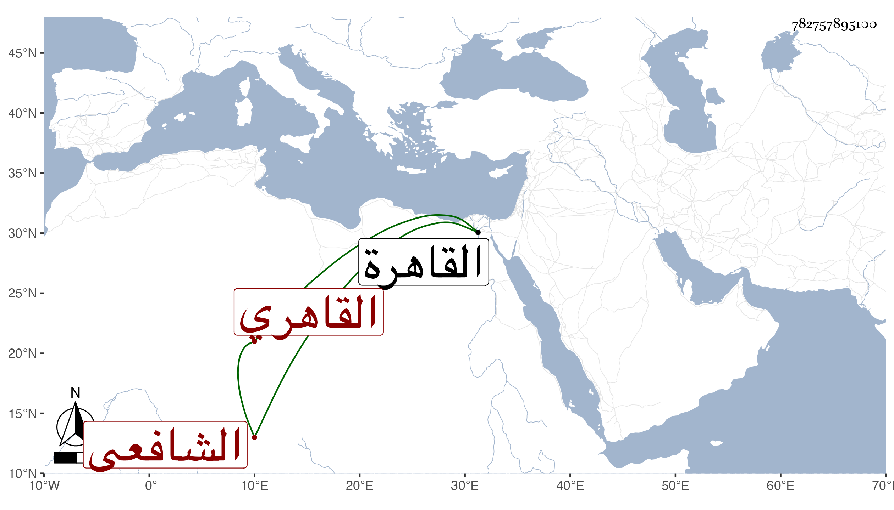

0902Sakhawi.DawLamic.ITO20230111-ara1.EIS1600.782757895100
Biography ID: 782757895100
249
زينب ابنة عبد الله بن أحمد بن علي بن محمد بن القسم بن صالح بن هاشم أم محمد ابنة الجمال بن الحافظ الشهاب القاهري الشافعي أخت إبراهيم الماضي وأبوهما وتعرف كسلفها بابنة العرياني . ولدت تقريبا في سنة ثمانين وسبعمائة فإنها أحضرت وهي في الثانية في أواخر سنة أحدى وثمانين على الجمال عبد الله الباجي أشياء وسمعت على أبي العباس المنفر وابن حاتم والسويداوي وآخرين وأجاز لها النشاوري والجمال الأميوطي وجماعة وحدثت سمع منها الفضلاء أخذت عنها أشياء وكانت خيرة صالحة من بيت حديث ورواية ولست أستبعد إجازتها من القدماء فقد كان أخوها يذكر أن والدها استدعى لها في صغره وأن الاستدعاء عنده ماتت بالقاهرة في يوم الأحد سادس عشري ذي الحجة سنة ست وخمسين رحمها الله .
